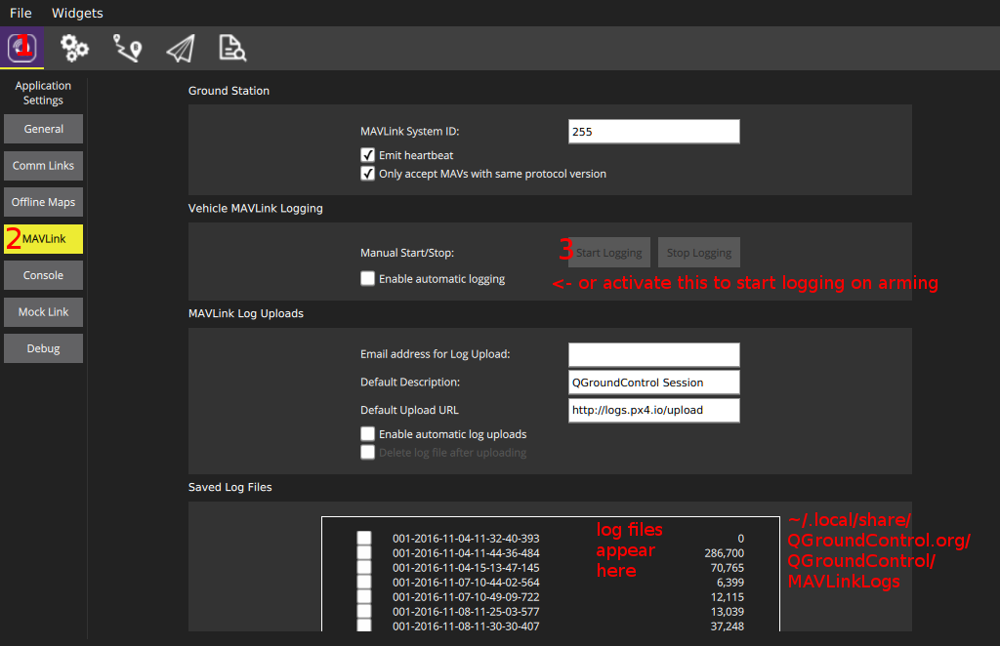

日志记录
日志能够记录任何 orb 主题及其包含的所有字段。 所有需要的数据都是从.msg文件中产生的，因此只需要指定出题的名称。 可选的间隔参数指定了主题的最大日志记录 速率。 所有主题的实例将会被记录。
输出的日志格式是 Ulog。
用法
默认情况下，日志会在解锁时自动记录，并在加锁时停止。 每次解锁后的飞行对话将会在 SD 卡上生成一个新的日志文件。 要显示当前状态，可以在控制台上输入 logger status。 如果你想立即开始日志记录, 请使用 logger on</0 >。 这将覆盖解锁状态，如果系统已解锁。 <code>log off 取消日志记录。
使用
logger help
列举所有支持的日志命令和参数。
配置
日志主题列表可以以 SD 卡文件的形式定制。 在 SD 卡上创建一个 etc/logging/logger_topics.txt 文件，其中包含主题列表（对于SITL，则是build/px4_sitl_default/tmp/rootfs/fs/microsd/etc/logging/logger_topics.txt）：
<topic_name>, <interval>
<interval>是一个可选项，如果指定，则以 ms 为单位定义两条日志信息的最小记录间隔。 如果未指定,，则全速率记录主题信息。
文件中的主题名将替换所有默认记录的主题。
脚本
在 pyulog 存储库中有几个脚本来分析和转换日志记录文件。
丢帧
日志丢帧是不希望发生的，下面有几个因素对影响丢帧的数量：
- 我们测试的大多数 sd 卡每分钟都会有多个停顿。 这种停顿在写命令期间有好几个 100ms 的延迟。 如果写缓冲区在这期间被填满会引起丢帧。 这种影响取决于 SD 卡本身（见下文）。
- 格式化 SD 卡有助于避免丢帧。
- 增大日志缓存也有效。
- 减小所选主题的日志记录频率或者删除一些不必要记录的主题（
info.py<file>在这里有用）。
SD 卡
下面提供了不同 SD 卡的性能。 测试是在 Pixracer上进行的，这个结果也适用于 Pixhawk。
Nuttx 支持的最大 SD 卡大小为 32GB（SD卡 2.0 存储规范）
| SD 卡 | 平均 Seq 写入速度 [KB/s] | 最大写入时间 / 块（平均） [ms] |
|---|---|---|
| SanDisk Extreme U3 32GB | 461 | 15 |
| Sandisk Ultra Class 10 8GB | 348 | 40 |
| Sandisk Class 4 8GB | 212 | 60 |
| SanDisk Class 10 32 GB (High Endurance Video Monitoring Card) | 331 | 220 |
| Lexar U1 (Class 10), 16GB High-Performance | 209 | 150 |
| Sandisk Ultra PLUS Class 10 16GB | 196 | 500 |
| Sandisk Pixtor Class 10 16GB | 334 | 250 |
| Sandisk Extreme PLUS Class 10 32GB | 332 | 150 |
比平均写入速度更重要的是每个块的最大写入时间（4KB）。 这决定了最小缓冲区大小：这个值越大，日志缓冲区就要越大，以避免丢帧。 默认主题的日志记录带宽约为 50 KB/s，所有 SD 卡都满足这一点。
到目前为止，我们知道的性能最好的卡是 SanDisk Extreme U3 32GB。 建议使用这种卡，因为不会达到它的写入时间峰值（因此几乎没有丢帧）。 不同大小的卡可能工作的一样好，但是他们的性能通常是不同的。
你可以使用 sd_bench -r 50 测试自己的 SD 卡，并将结果报告给 https://github.com/PX4/Firmware/issues/4634。
日志流
传统的、仍然支持的日志记录方法是在 FMU 上使用 SD 卡。 但是，有一种替代方法，即日志流，它通过 mavlink 发送相同的日志记录数据。 这种方法可以用在 FMU 没有 SD 卡插槽的情况下（比如 intel@ Aero Ready to Fly Drone），或者是单纯的不想用SD卡。 这两种方法可以同时独立使用。
这个要求是链路能够提供至少 50 Kb/s 的速率，比如 Wifi 链路。 并且同一时刻只能有一个客户机可以请求日志流。 连接不需要稳定，协议能够解决这个问题。
这是几种不同的支持日志流的客户机：
- Firmware/Tools 中的
mavlink_ulog_streaming.py脚本 - QGroundControl 
- MAVGCL
诊断
- 如果日志流没有启动，确保
logger进程在运行（见上文），并在启动时检查控制台输出。 - 如果仍然没有工作，确保使用的是 Mavlink 2。 设置
MAV_PROTO_VER为 2 强制使用。 日志流最大使用配置的 Mavlink 速率的 70%（
-r参数）。 如果需要更大的速率，数据会丢失。 当前使用的百分比可以用mavlink status查看（样例中使用了 1.8%）：instance #0:
GCS heartbeat: 160955 us ago mavlink chan: #0 type: GENERIC LINK OR RADIO flow control: OFF rates: tx: 95.781 kB/s txerr: 0.000 kB/s rx: 0.021 kB/s rate mult: 1.000 ULog rate: 1.8% of max 70.0% accepting commands: YES MAVLink version: 2 transport protocol: UDP (14556)
同时确保 txerr 一直是 0。 如果它增大了，要么是 Nuttx 发送缓冲区太小，要么是物理连接已饱和，要么是硬件处理数据太慢。